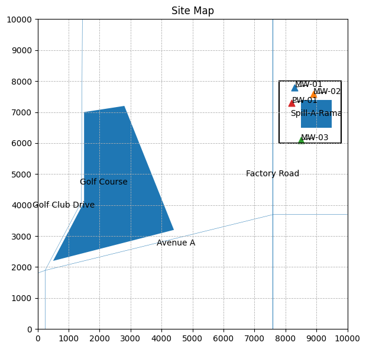
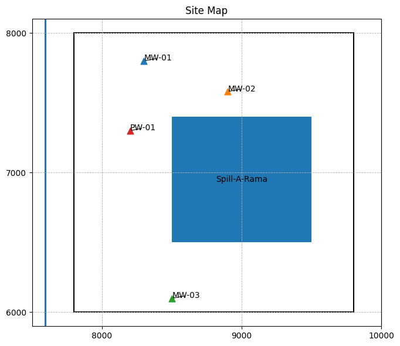

# Site Map Generator
import matplotlib.pyplot as plt
from matplotlib.patches import Rectangle, Polygon
def make_site_map(
xlim=(0, 100),
ylim=(0, 100),
points=None,
rectangles=None,
polygons=None,
labels=None,
title="Site Map (Annotated Scatterplot)",
grid=True,
grid_spacing=None,
equal_aspect=True,
invert_y=False,
dpi=300,
outfile_png="site_map.png",
transparent=True,
north_arrow=True,
north_arrow_pos=(0.9, 0.9),
north_arrow_length=8,
scale_bar=True,
scale_bar_pos=(0.1, 0.05),
scale_bar_length=20,
scale_bar_units="m",
):
if points is None: points = []
if rectangles is None: rectangles = []
if polygons is None: polygons = []
if labels is None: labels = {'fontsize': 10, 'offset': (1.5, 1.5)}
fs = labels.get('fontsize', 10)
dx, dy = labels.get('offset', (1.5, 1.5))
fig, ax = plt.subplots(figsize=(8, 6))
for p in points:
x, y = p['x'], p['y']
marker = p.get('marker', 'o')
size = p.get('size', 50)
ax.scatter([x], [y], marker=marker, s=size)
if p.get('label') and p.get('annotate', True):
ax.annotate(p['label'], (x, y), xytext=(x + dx, y + dy),
textcoords='data', fontsize=fs,
arrowprops=dict(arrowstyle='-', lw=0.8))
for r in rectangles:
xy = r['xy']; width = r['width']; height = r['height']
lw = r.get('lw', 1.5)
rect = Rectangle(xy, width, height, fill=False, lw=lw)
ax.add_patch(rect)
if r.get('label'):
rx = xy[0] + width/2.0; ry = xy[1] + height/2.0
ax.annotate(r['label'], (rx, ry), ha='center', va='center')
for poly in polygons:
xy = poly['xy']; lw = poly.get('lw', 12.5)
closed = poly.get('closed', True)
poly_patch = Polygon(xy, closed=closed, fill=True, lw=lw)
ax.add_patch(poly_patch)
if poly.get('label'):
cx = sum(pt[0] for pt in xy)/len(xy)
cy = sum(pt[1] for pt in xy)/len(xy)
ax.annotate(poly['label'], (cx, cy), ha='center', va='center')
ax.set_xlim(*xlim); ax.set_ylim(*ylim)
if equal_aspect: ax.set_aspect('equal', adjustable='box')
if invert_y: ax.invert_yaxis()
ax.set_title(title)
if grid: ax.grid(True, which='both', linestyle='--', linewidth=0.6)
if grid_spacing is not None and grid_spacing > 0:
from matplotlib.ticker import MultipleLocator
ax.xaxis.set_major_locator(MultipleLocator(grid_spacing))
ax.yaxis.set_major_locator(MultipleLocator(grid_spacing))
plt.tight_layout()
fig.savefig(outfile_png, dpi=dpi, transparent=transparent, bbox_inches='tight')
plt.show()
return fig, ax, outfile_png
fig, ax, png_path = make_site_map(
xlim=(0, 10000),
ylim=(0, 10000),
points=[
{'x': 8300, 'y': 7800, 'label': 'MW-01', 'marker': '^', 'size': 60},
{'x': 8900, 'y': 7580, 'label': 'MW-02', 'marker': '^', 'size': 60},
{'x': 8500, 'y': 6100, 'label': 'MW-03', 'marker': '^', 'size': 60},
{'x': 8200, 'y': 7300, 'label': 'PW-01', 'marker': '^', 'size': 60},
],
rectangles=[
{'xy': (7800, 6000), 'width': 2000, 'height': 2000, 'label': ''},
],
polygons=[
{'xy': [(500, 2200), (1500, 4100), (1500, 7000), (2800, 7200),(4400, 3200)], 'label': 'Golf Course'},
{'xy': [(250, 0), (250, 1900), (1420, 4100), (1450, 10000), (1440, 10000), (1410, 4100), (240, 1900), (240, 0)], 'label': 'Golf Club Drive'},
{'xy': [(0, 1810), (250, 1900), (7600, 3700) ,(10000, 3700) ,(10000, 3690), (7600,3690) , (250, 1890), (0,1800)], 'label': 'Avenue A'},
{'xy': [(7600, 0), (7600, 10000), (7590, 10000),(7590,0)], 'label': 'Factory Road'},
{'xy': [(8500, 6500), (8500, 7400), (9500, 7400),(9500,6500)], 'label': 'Spill-A-Rama'},
],
labels={'fontsize': 10, 'offset': (2, 2)},
title="Site Map",
grid=True,
grid_spacing=1000,
equal_aspect=True,
invert_y=False,
dpi=300,
outfile_png="site_map_homework.png",
transparent=True,
north_arrow=True,
north_arrow_pos=(0.9, 0.9),
north_arrow_length=8,
scale_bar=True,
scale_bar_pos=(0.1, 0.05),
scale_bar_length=20,
scale_bar_units="m",
)

fig, ax, png_path = make_site_map(
xlim=(7500, 10000),
ylim=(5900, 8100),
points=[
{'x': 8300, 'y': 7800, 'label': 'MW-01', 'marker': '^', 'size': 60},
{'x': 8900, 'y': 7580, 'label': 'MW-02', 'marker': '^', 'size': 60},
{'x': 8500, 'y': 6100, 'label': 'MW-03', 'marker': '^', 'size': 60},
{'x': 8200, 'y': 7300, 'label': 'PW-01', 'marker': '^', 'size': 60},
],
rectangles=[
{'xy': (7800, 6000), 'width': 2000, 'height': 2000, 'label': ''},
],
polygons=[
{'xy': [(500, 2200), (1500, 4100), (1500, 7000), (2800, 7200),(4400, 3200)], 'label': 'Golf Course'},
{'xy': [(250, 0), (250, 1900), (1420, 4100), (1450, 10000), (1440, 10000), (1410, 4100), (240, 1900), (240, 0)], 'label': 'Golf Club Drive'},
{'xy': [(0, 1810), (250, 1900), (7600, 3700) ,(10000, 3700) ,(10000, 3690), (7600,3690) , (250, 1890), (0,1800)], 'label': 'Avenue A'},
{'xy': [(7600, 0), (7600, 10000), (7590, 10000),(7590,0)], 'label': 'Factory Road'},
{'xy': [(8500, 6500), (8500, 7400), (9500, 7400),(9500,6500)], 'label': 'Spill-A-Rama'},
],
labels={'fontsize': 10, 'offset': (2, 2)},
title="Site Map",
grid=True,
grid_spacing=1000,
equal_aspect=True,
invert_y=False,
dpi=300,
outfile_png="site_map_homework.png",
transparent=True,
north_arrow=True,
north_arrow_pos=(0.9, 0.9),
north_arrow_length=8,
scale_bar=True,
scale_bar_pos=(0.1, 0.05),
scale_bar_length=20,
scale_bar_units="m",
)

def W(u): # Theis well function using exponential integral
import scipy.special as sc
w = sc.expn(1,u)
return(w)
def s(radius,time,storage,transmissivity,discharge): # Drawdown function using exponential integral
import math
u = ((radius**2)*(storage))/(4*transmissivity*time)
s = ((discharge)/(4*math.pi*transmissivity))*W(u)
return(s)
dgpm=100
dcfm=(dgpm/7.48)
dcmm=dcfm/(3.28**3)
storage=0.000012
hydk = (1.0e-5)*60 #m/min
transmissivity=hydk*100 #f^2/m
discharge=dcmm
#print(s(radius,time,storage,transmissivity,discharge))
time=[1.0,6.0,12.0,18.0,24.0,30.0,60.0,90.0,120.0,240.0,480.0] #minutes
s1=[0 for i in range(len(time))]
s2=[0 for i in range(len(time))]
s3=[0 for i in range(len(time))]
import math
r1= math.sqrt((8300-8200)**2 + (7800-7300)**2)
r2= math.sqrt((8900-8200)**2 + (7580-7300)**2)
r3= math.sqrt((8500-8200)**2 + (6100-7300)**2)
print(r1,r2,r3)
509.9019513592785 753.9230729988305 1236.9316876852981
for i in range(len(time)):
s1[i]=s(r1,time[i],storage,transmissivity,discharge)
s2[i]=s(r2,time[i],storage,transmissivity,discharge)
s3[i]=s(r3,time[i],storage,transmissivity,discharge)
for i in range(len(time)):
print(time[i],"&",round(s1[i],3),"&",round(s2[i],3),"&",round(s3[i],3),"\\"+"\\")
1.0 & 0.0 & 0.0 & 0.0 \\
6.0 & 0.02 & 0.001 & 0.0 \\
12.0 & 0.096 & 0.015 & 0.0 \\
18.0 & 0.18 & 0.045 & 0.001 \\
24.0 & 0.257 & 0.082 & 0.005 \\
30.0 & 0.326 & 0.121 & 0.012 \\
60.0 & 0.582 & 0.298 & 0.071 \\
90.0 & 0.752 & 0.436 & 0.143 \\
120.0 & 0.88 & 0.546 & 0.212 \\
240.0 & 1.202 & 0.84 & 0.433 \\
480.0 & 1.537 & 1.16 & 0.71 \\
300*1e-4*60
1.8